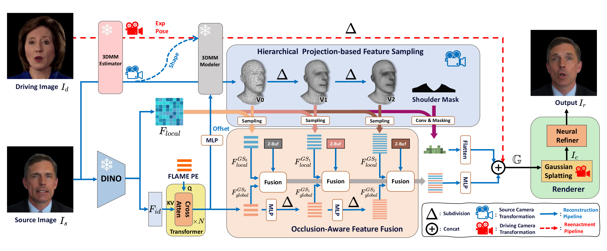
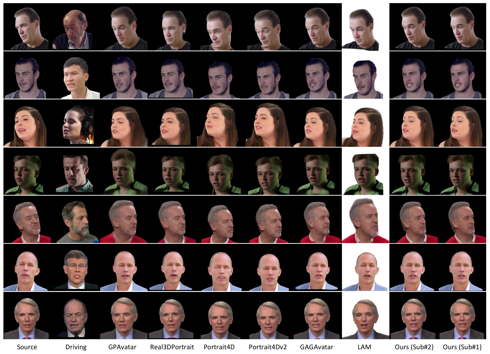
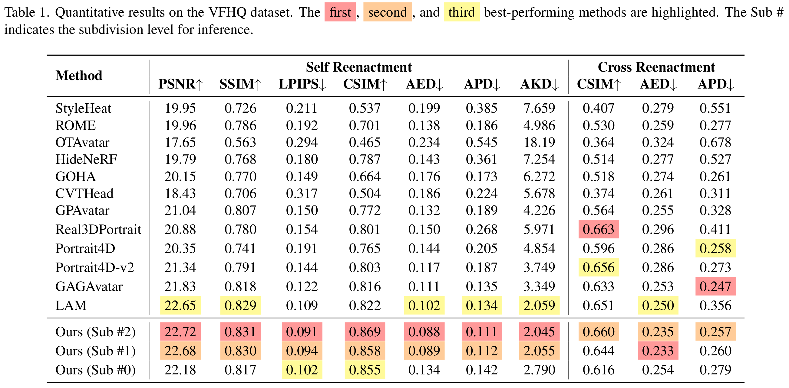
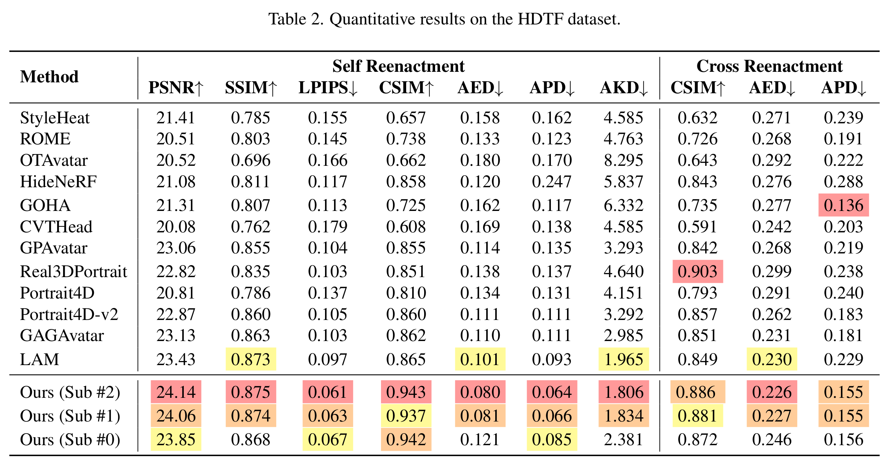
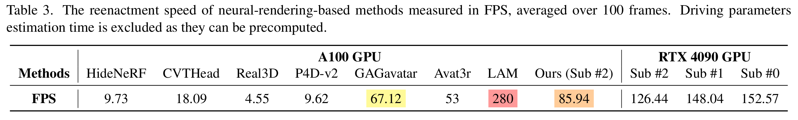

Multi-view Results

We propose OMG-Avatar, a novel One-shot method that leverages a Multi-LOD (Level-of-Detail) Gaussian representation for animatable 3D head reconstruction from a single image in 0.2s. Our method enables LOD head avatar modeling using a unified model that accommodates diverse hardware capabilities and inference speed requirements. To capture both global and local facial characteristics, we employ a transformer-based architecture for global feature extraction and projection-based sampling for local feature acquisition. These features are effectively fused under the guidance of a depth buffer, ensuring occlusion plausibility. We further introduce a coarse-to-fine learning paradigm to support Level-of-Detail functionality and enhance the perception of hierarchical details. To address the limitations of 3DMMs in modeling non-head regions such as the shoulders, we introduce a multi-region decomposition scheme in which the head and shoulders are predicted separately and then integrated through cross-region combination. Extensive experiments demonstrate that OMG-Avatar outperforms state-of-the-art methods in reconstruction quality, reenactment performance, and computational efficiency.
The overall pipeline of OMG-Avatar framework. Our method extracts global features via cross-attention and local details via projection-based sampling, which are fused under the guidance of depth buffers. A coarse-to-fine strategy is proposed to facilitate hierarchical detail perception. The head and shoulder are predicted separately using shared features and then combined for rendering.

We compare our method against baseline approaches on the VFHQ and HDTF datasets, with qualitative results shown in the figure below. As can be seen from the figure, GPAvatar suffers from inaccurate expression tracking and exhibits noticeable blurring in the neck region—a limitation also observed in GAGAvatar (see rows 4 and 5). Although Real3DPortrait, Portrait4D, and Portrait4Dv2 achieve high visual fidelity, they introduce severe misalignment artifacts under certain poses, manifesting as prominent cracking near the neck and chin (row 1). Additionally, LAM exhibits unnatural shoulder tilting (rows 1 and 3) alongside noticeable artifacts around the mouth and teeth (rows 2 and 6). In contrast, our method achieves superior visual quality compared to existing approaches while using significantly fewer Gaussian points. Notably, even our low-resolution variant (Sub #1 with ∼29K Gaussian points), shown in the last column, maintains comparable visual fidelity, making it particularly well-suited for deployment in high-speed applications or on hardware with limited computational resources.


As shown in the following Tab. 1 and Tab. 2, our method (Sub #2) outperforms existing approaches across all reconstruction metrics (PSNR, SSIM, and LPIPS), as well as identity, expression, and pose consistency. Remarkably, our low-resolution LOD Sub #1 surpasses LAM (80K Gaussians) and GAGAvatar (180K Gaussians) on both datasets using only 29K Gaussian points, demonstrating the effectiveness of our hierarchical feature extraction and fusion strategy. We further report the inference efficiency in Tab. 3. Our method achieves an inference speed of 85 FPS on an A100 GPU and 126 FPS on the consumer-grade RTX 4090 GPU, using the native PyTorch framework and the official implementation of 3D Gaussian Splatting. Compared to existing neural-rendering-based methods, our approach attains the highest inference speed. Moreover, our method outperforms LAM (280 FPS on A100 GPU without neural rendering) in terms of geometric details and dynamic textures, achieving an optimal balance between efficiency and visual quality.



@misc{ren2026omgavataroneshotmultilodgaussian,
title={OMG-Avatar: One-shot Multi-LOD Gaussian Head Avatar},
author={Jianqiang Ren and Lin Liu and Steven Hoi},
year={2026},
eprint={2603.01506},
archivePrefix={arXiv},
primaryClass={cs.CV},
url={https://arxiv.org/abs/2603.01506},
}